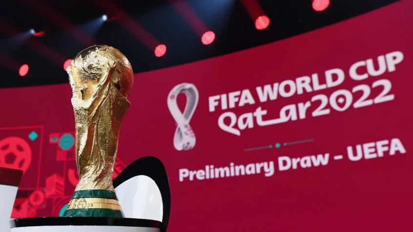

O primeiro mundial a ser realizado no Oriente Médio!

Venha celebrar! o maior torneio de seleções
O início da Copa do Mundo do Qatar, de 2022, está cada vez mais próximo.
E enquanto todos se preparam para o maior torneio de futebol do mundo, as seleções de cada país disputam as vagas que existem para a disputa do torneio.